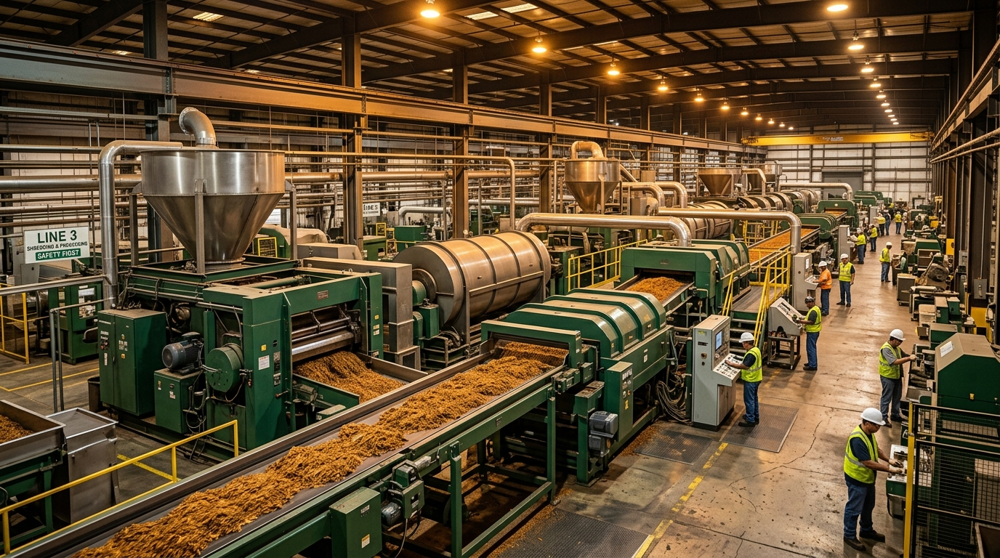

Cut-Rag
Understanding Cut-Rag Tobacco: Specifications and Processing
An overview of the key parameters that define cut-rag tobacco quality — cut width, moisture, grade and blend composition.

Tobacco Processing & Cut-Rag Manufacturing
Prime Leaf Processing delivers reliable tobacco leaf processing and cut-rag solutions for international manufacturers, traders and tobacco industry partners.
About Prime Leaf Processing
Prime Leaf Processing is a Bangladesh-based tobacco processing company focused on transforming carefully selected tobacco leaf into consistent, specification-driven processed tobacco and cut-rag products for professional B2B customers.
Operating from our facility in the BEPZA Export Processing Zone in Chattogram, we work with tobacco manufacturers, international trading companies, importers and procurement teams seeking a reliable industrial processing partner.
Processing Expertise
End-to-end tobacco processing from leaf selection through to finished cut-rag, managed by experienced processing professionals.
Consistent Specifications
Batch-to-batch consistency is central to our operations. Customer specifications are maintained throughout each production run.
International B2B Focus
Purpose-built for international B2B relationships. We serve tobacco manufacturers, traders and sourcing organisations globally.
Years of Industry Experience
Annual Processing Capacity
Markets Served
Specifications Supported
Product Categories
Statistics to be updated with confirmed company data via js/cms-config.js
Processing Capabilities
From raw leaf selection to finished cut-rag — every stage of our processing cycle is designed around precision, consistency and customer specification.
Stage 01
Selection and preparation of tobacco leaf according to required specifications. Incoming leaf is assessed for grade, type and quality compliance before entering the processing cycle.
Stage 02
Controlled mechanical threshing and separation of tobacco material, maintaining the integrity of leaf lamina while removing stems and non-tobacco material.
Stage 03
Moisture and physical conditioning of tobacco before further processing. Controlled conditioning ensures leaf is in optimum condition for cutting and further operations.
Stage 04
Precision cutting of tobacco to agreed customer cut-width specifications. Cut consistency is maintained throughout each production batch.
Stage 05
Controlled drying and conditioning to achieve required physical characteristics and moisture levels as agreed with each customer.
Stage 06
Blending of tobacco types and grades according to customer-defined blend specifications. Consistency is maintained across batches for reliable, repeatable supply.
Stage 07
Inspection and testing throughout the processing cycle — from incoming leaf to finished product. Quality is controlled at each stage, not only at the end.
Stage 08
Bulk or customer-specified packaging and shipment preparation. Documentation and logistics coordinated according to customer and destination requirements.
Cut-Rag Tobacco Processing
Prime Leaf Processing provides professional cut-rag processing designed entirely around your requirements. Every parameter is agreed with the customer before processing begins.
Cut Width
Processed to your required cut-width specification with consistency maintained throughout each batch.
Cut Length
Cut length can be specified and controlled according to your product's manufacturing requirements.
Moisture
Moisture content is controlled and verified to agreed specifications throughout the drying and conditioning process.
Tobacco Type
Flue-cured, Burley, Oriental and blended tobaccos processed according to agreed type specifications.
Grade
Tobacco is selected and processed according to agreed grade parameters appropriate for your application.
Blend Composition
Multi-type blends formulated according to customer-defined blend specifications and component ratios.
Packaging
Bulk or customer-specified packaging. Cartons, cases and bulk formats available to agreed specifications.
Batch Requirements
Batch sizes, scheduling and delivery timelines planned according to your supply requirements.
No obligation. Our commercial team will review your requirements and respond promptly.
Customer Specification Builder
Enter your requirements below. Your specification will be carried directly into a formal quote request for our commercial team to review.
Custom Blend Builder
Define your custom tobacco blend requirements step by step. Your completed blend specification will be submitted to our commercial team.
Your blend specification is ready to submit. Clicking the button below will take you to our quote request form, pre-filled with your blend details, for our commercial team to review.
Blend Specification Summary
Your specification details will appear here after completing previous steps.
Product Catalogue
Our product range covers the major processed tobacco categories for international B2B customers. All products are processed to agreed customer specifications.
Responsible Sourcing
Prime Leaf Processing is committed to sourcing raw tobacco leaf responsibly, working with supply networks that share our commitment to quality, consistency and responsible agricultural practices.
Our sourcing approach is guided by customer requirements and commercial best practice. We work to ensure that the raw material entering our processing facility meets agreed standards from the point of origin.
Raw Tobacco Sourcing
Sourcing raw tobacco leaf from established supply networks in key producing regions.
Leaf Selection & Grading
Rigorous selection and grading of incoming tobacco to ensure processing quality.
Supply Consistency
Maintaining supply consistency and traceability from source through to finished product.
Customer-Specific Sourcing
Where required, sourcing raw material according to specific customer origin or grade requirements.
Supplier Relationships
Building long-term relationships with leaf suppliers who share our quality commitments.
Traceability
Maintaining traceability records through the supply chain from raw material to dispatch.
Quality System
Quality is controlled at every stage — from incoming leaf to finished cut-rag. Our multi-stage quality system ensures consistency batch after batch.
01
All incoming tobacco leaf is inspected against agreed grade and quality specifications before entering the processing cycle.
02
Moisture levels are monitored and controlled at multiple points throughout conditioning and drying.
03
Tobacco grade and type are verified against customer order requirements at key processing stages.
04
Cut-width measurements are verified at regular intervals during cutting operations to ensure specification compliance.
05
Non-tobacco material and foreign material controls applied throughout the processing cycle.
06
Each production batch is recorded and traceable from raw material through to finished product dispatch.
07
Finished product packaging inspected before dispatch to confirm condition and labelling accuracy.
08
Final product verified against agreed customer specifications before release for shipment.
09
Physical characteristics of tobacco assessed during and after processing operations to ensure product integrity.
Logistics & Export
Our logistics process ensures your processed tobacco is ready for shipment with complete documentation and appropriate packaging for international delivery.
Sustainability
Prime Leaf Processing is committed to operating responsibly across its supply chain, processing operations and business relationships.
Working to source raw tobacco leaf from responsible supply sources in accordance with applicable requirements.
Pursuing continuous improvement in the efficient use of resources across our processing operations.
Committed to minimising processing waste and identifying responsible disposal and utilisation routes.
Working towards greater energy awareness and efficiency within our processing facility.
Supporting responsible agricultural practices within our tobacco supply network where possible.
Committed to maintaining positive relationships with the communities in which we operate.
Operating with awareness of environmental responsibilities and working to reduce our environmental footprint.
Industry Insights
Perspectives on tobacco processing, cut-rag manufacturing, quality and B2B supply.
An overview of the key parameters that define cut-rag tobacco quality — cut width, moisture, grade and blend composition.
Leaf grading is the essential first step in producing consistent processed tobacco. This article explores the grading criteria and how they influence downstream quality.
Bangladesh's strategic location, processing capability and B2B supply infrastructure make it a growing centre for international tobacco processing partnerships.